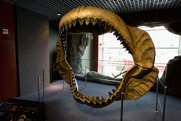

The megalodon (carcharon megalodon or carcharocles megalodon) is an extinct species of shark that lived between 23 to 2.6 million years ago, doing the Early Miocene to the end of the Pilocene. Some scientists believe it's closely related to the great white shark, while others believe it was part of a completely different shark family. The megaladon has caught a lot of attention ranging from countless "mockumentaries" (on channels like the History Channel and Discovery) to potential (but not evidence based) sightings of a gargantuan shark longer than 90 feet. In the late 1800s the HMS Challenger erroneously dated megalodon teeth to be around 11,000 to 24,000 years old. This report caused people to speculate if they could possibly still be roaming the unkown corners of the ocean. Of course, however, these are all speculations. This organism is most definitely extinct in all ways possible.
As indicated by the jaw reconstruction above (which currently sits at the National Aquarium in Baltimore, Maryland), this shark was really, really big. Since sharks aren't very bony and are mostly made of cartilage, teeth are the main fossils we have left from these animals. Teeth play an important role in estimating size and other factors like feeding pattern and bite force.